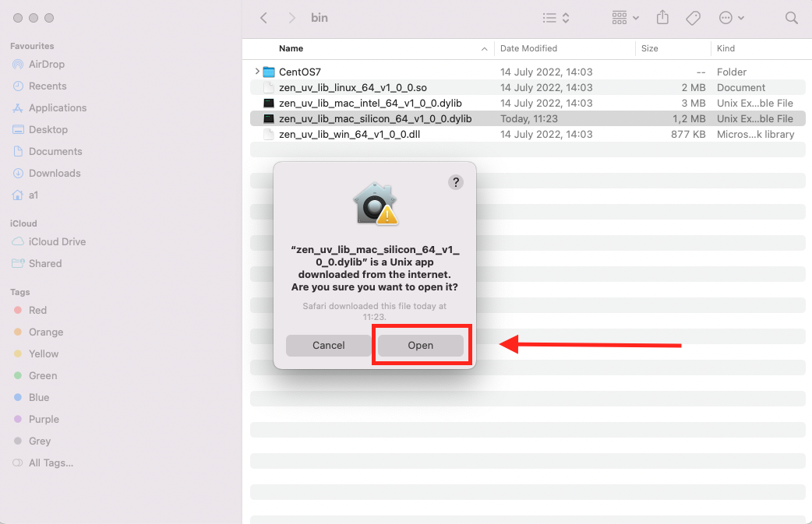
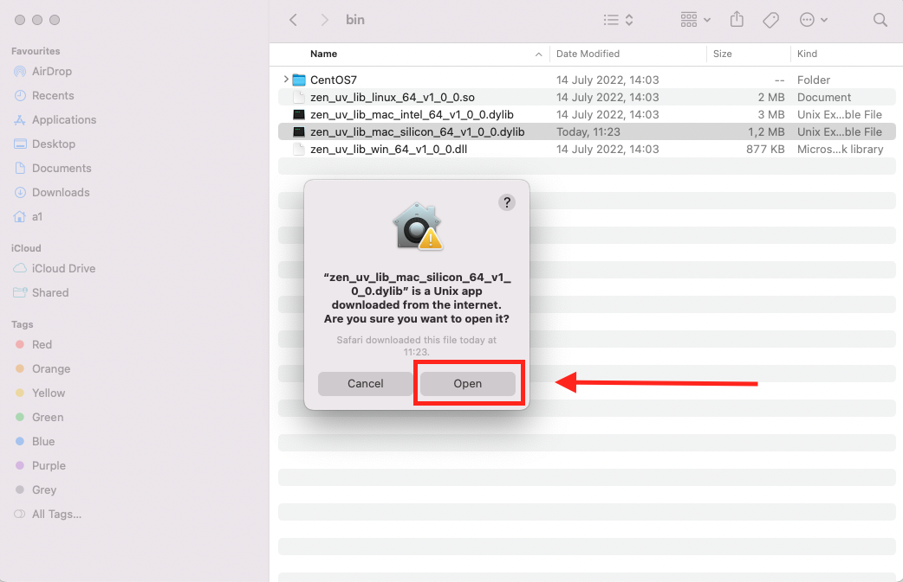
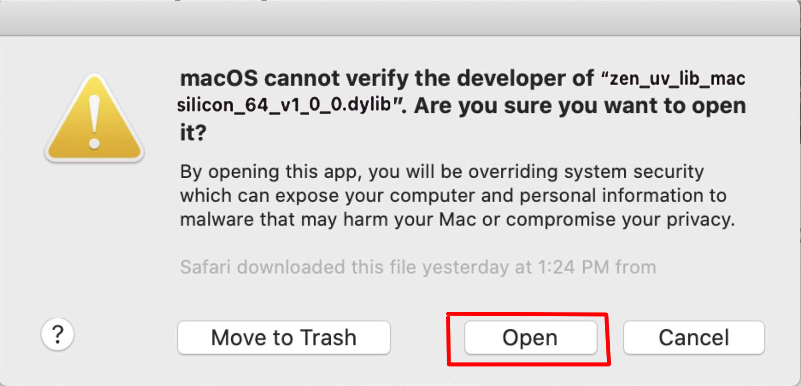
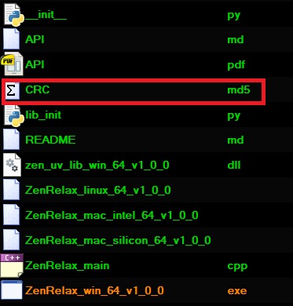

Installation and update
Installation
Starting with ZenUV 5.1, your favorite add-on has been upgraded to a Blender Extension - bringing smoother installation, and better integration with Blender’s official extension system.
Installing via Drag-and-Drop
Blender supports a streamlined method for installing add-ons: simply dragging and dropping the .zip file directly into the interface. This approach is ideal for users who want a quick, no-menu setup.
✅ Requirements
- Blender 4.1 or newer (older versions may not support drag-and-drop installation natively)
- Add-on packaged as a
.zipfile (not extracted)
üì¶ How to Use Drag-and-Drop Installation
-
Locate the Add-on File
Find the.zipfile of the add-on on your computer. Make sure it’s not unzipped (Blender expects the compressed format). -
Open Blender
Launch Blender and navigate to any editor window (e.g., 3D Viewport, Outliner, or Preferences). As of recent updates, drag-and-drop works across all editors. -
Drag the File into Blender
Click and drag the.zipfile from your file explorer and drop it into the Blender window. -
Confirm Installation
Blender will automatically process the file and install the add-on. You’ll see a confirmation message, and the add-on will appear in thePreferences > Add-onslist. -
Enable the Add-on Go to
Edit > Preferences > Add-ons, search for the newly installed add-on, and check the box to enable it.
üìç Where to Find It
During installation, the extension will appear in the selected repository - either the default Blender Extensions repository or any custom repository you’ve configured in Preferences.
-
Open Preferences
Go toEdit > Preferences, then switch to the Extensions tab. -
Select Repository
Choose the repository where the extension is hosted. If you’re using a custom repository, make sure the name matches the name that was set during installation. -
Search for the Extension
Use the search bar to find the extension by name.
üõ† Troubleshooting
- If the add-on doesn’t appear after dropping, check the Console for errors.
- Ensure the file is a valid Blender add-on
.zipand not a nested archive. - Restart Blender after installation if it was previously installed (addon preferences were registered previously).
Zen UV Core Library
The Zen UV Core Library is an optional utility module bundled with the addon. It provides enhanced functionality specifically for the Stack module to get the fastest computations in C++ which is impossible to be implemented in Python, including:
- üß© Island stacking operations: Efficient handling of geometry islands during stacking workflows.
- ⏳ Progress bar with cancel support: Displays a responsive progress bar during long operations, allowing users to cancel if needed.
Note
It is distributed separately from the add-on as it is licensed differently from the GPL (Apache License 2.0). Zen UV Core library does not collect or send any data. It does not use any network connections: either internet or local. It is supported on Windows, Mac OS 11 (M1 CPU Universal app only), and Linux platforms. This library is not required for other addon features and can be excluded if the Stack module is not in use.
When to Use Core Library
You’ll need the Core Library only if you plan to use:
| Feature | Requires Core Library? |
|---|---|
| Stack module (island stacking) | ✅ Yes |
| Progress bar with cancel | ✅ Yes |
| General addon functionality | ❌ No |
Zen UV Core Library Installation
- Go to Preferences -> Add-ons.
- Find installed and enabled Zen UV add-on.
- Go to Modules.
- Press Download Zen UV Core Library (FREE) if you don’t have it.

- Register on the gumroad.com website
- Enter the amount in the price field:
- 0 - if you want to get it completely free
- 1+ - if you want to donate to the development of ZenUV
- Press I want this! button
- Unpack downloaded archive in any location on your drive
- Press Install Zen UV Core Library.
- Select Zen UV Core Library file.
- Press Install Zen UV Core Library.
- Done! Now the add-on is fully installed and you can use all the features!

{kind=link}
{kind=link}
Zen UV Core Library installation for Mac M1-M2 (Silicon App)
Library
The new macOS M1-M2 has increased security checks that necessitates users to perform a security override for Zen UV Core to work. Specifically, Zen UV uses dynamic “zen_uv_core* .dylib” libraries that need to have its security allowed. Therefore, their installation will require additional steps described below.
Certificate
You can make sure that the library is legal and has a valid certificate using this command.
codesign -d --verbose=2 --extract-certificates <path/to/zen_uv_lib_mac_silicon_64_v1_0_0.dylib>
- Go to Preferences -> Add-ons.
- Find installed and enabled Zen UV add-on.
- Go to Modules.
- Press Download Zen UV Core Library (FREE) if you don’t have it.
- Open zen_uv_lib_mac_silicon_64_v1_0_0.dylib library file folowing instruction from Apple or images below.
 
 - Go to Blender and Select zen_uv_lib_mac_silicon_64_v1_0_0.dylib.
- Press Install Zen UV Core Library.

- Press Open in a popup window. 
- Done! Now the add-on is fully installed and you can use all the features!
{kind=link}
{kind=link}
Update
üîÑ Updating via Drag-and-Drop
If you drop a newer version of an add-on you already have installed, Blender will overwrite the old version automatically. No need to uninstall manually.
- Do the same steps as in drag-and-drop
- Restart Blender
⚙️ Updating via Preferences
- Go to Preferences -> Add-ons.
- Find installed and enabled Zen UV add-on.
- Press Update Zen UV.
- Select new version Zen UV.zip.
- Press Update Zen UV and restart Blender.
- Install Zen UV Core Library.
- Done!
{kind=link}
Manual Update
Manual
Use this update method if for some reason you need to update the add-on using Blender’s standard method. In all other cases, we recommend using Zen UV Update.
- Go to Preferences -> Add-ons.
- Find installed and enabled Zen UV add-on.
- Go to Modules.
- Press Unregister Zen UV Core Libary.
- Press Install.
- Select new version Zen UV.zip.
- Press Install Add-on and restart Blender.
- Install Zen UV Core Library.
- Done!
{kind=link}
{kind=link}
Still have problems with update?
- Go to Blender add-ons folder. (C:\Users\Sergey\AppData\Roaming\Blender Foundation\Blender\3.2\scripts\addons).
- Delete Zen UV folder manually.
- Install Zen UV add-on.
- Done!
Zen Relax Application Validity Check
The validity and correctness of Zen Relax application data file is essential to be working without errors.
-
Open file
crc.md5with any text editor  -
Pay attention to the present checksum values Example:
{kind=link}
950a6ed131b4cc48a8978a451a09e13d *ZenRelax_linux_64_v1_0_0
a3aa5cd73d4f1f7fcd1c62ec9147dc2c *ZenRelax_mac_intel_64_v1_0_0
f5c0c064ba189f02a05ea62c7e3c04f4 *ZenRelax_mac_silicon_64_v1_0_0
a195e82d9dbebefa5193d3409ed61cd4 *ZenRelax_win_64_v1_0_0.exe
- Compare the checksum of Relax application on your system with the checksum given in
crc.md5file
Validation Check (Windows)
Validate checksum with certutil command
certutil -hashfile "c:\Users\<UserName>\AppData\Roaming\Blender Foundation\Blender\3.3\scripts\addons\ZenUV\utils\clib\ZenRelax_win_64_v1_0_0.exe" MD5
{kind=link}